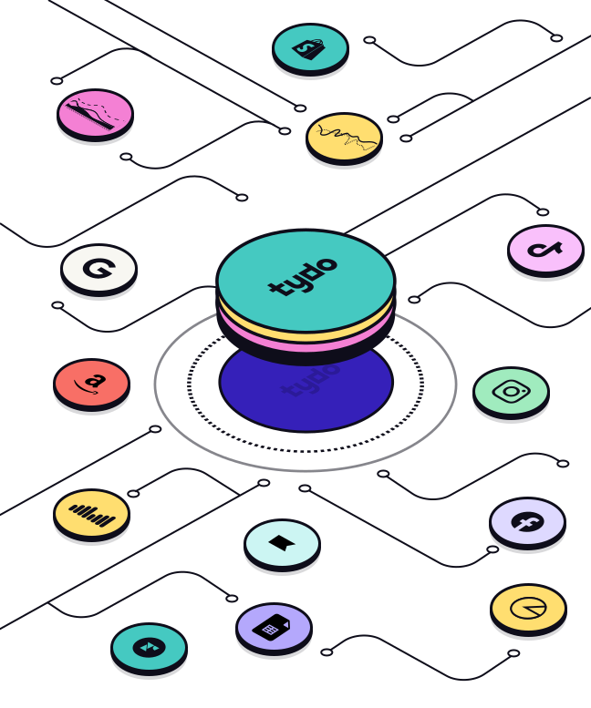
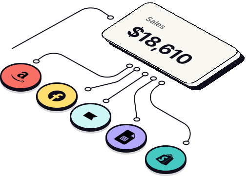
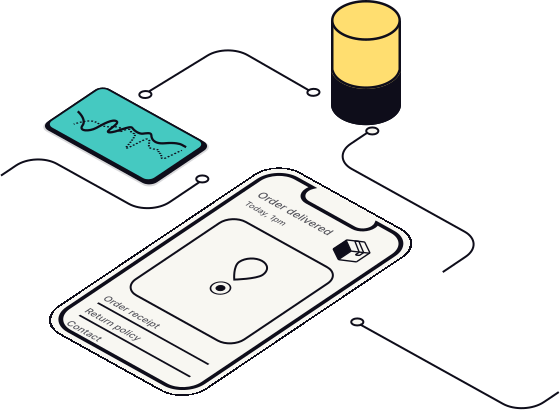
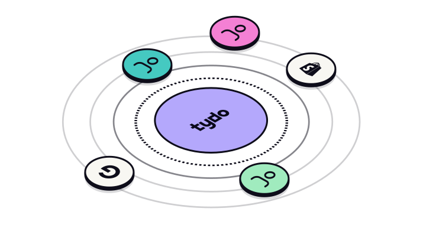
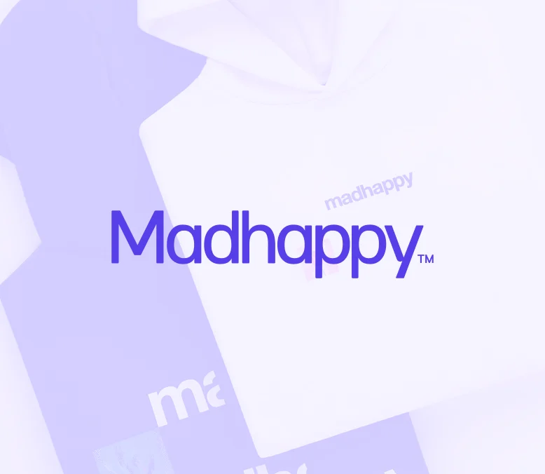
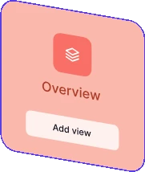
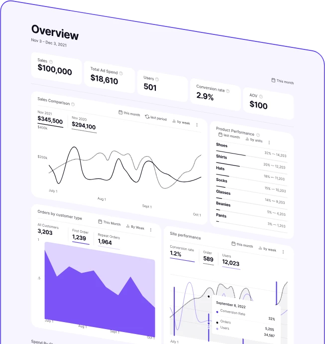
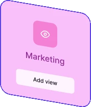
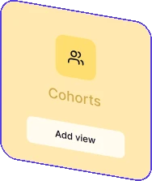

Tydo's Customer Intelligence Platform is a complete data warehouse
built for advanced customer analytics. No engineer required.

Reveal cohort metrics, product paths, and product performance using sources and filters configured to you.

Our clean app interface is designed for you to get answers. Our modern architecture is built for you to scale.

Choose to enrich your customer data with demographics to identify your optimal messaging by segment.

You have nothing to lose and a whole new world of customer data to gain.
Get startedWe'll learn about your business challenges and ideal state.
You will get a taste of what's possible with Tydo.
We'll finalize how we'll be working together.
We will fully setup your platform and configuration.
These are just a few examples of how we're helping the whole team understand customer behavior.
Executive overviews: Reports of your business performance across multiple Shopify, Amazon, retail, and more.
Cohort + LTV breakdowns: We can help you see the full payback picture so that you can make healthy, profit-first decisions.
Pacing + projections: See how your actuals stack up against your projections so you can lead with clarity.
Board reporting: For when you’re ready to automate your updates.
We needed to understand performance across our ecommerce store and our retail locations. Tydo helped us build that. Now, we get weekly reports with all the data we need to run Madhappy effectively.

Wherever you have valuable customer data, we can build it into your platform for tailored attributes.
No "shelfware" - Our white-glove onboarding gives you confidence in the results + time back.
Learn more



Our pricing starts at $2,000 per month.
Our volume + support scales with your needs.
ConsumerWeb design, Product, Development